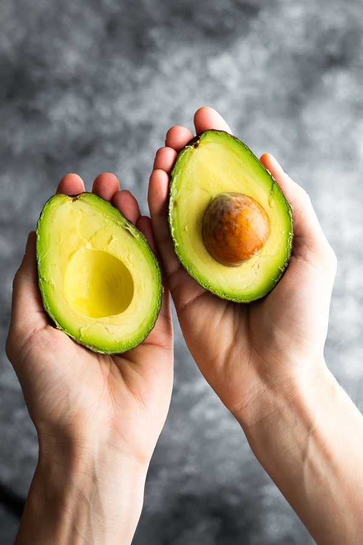

Take me to the bottom!
Here is a Title
Here is another Title.
Here is a title!!!
Title title
title title
title title title

In 1982, evolutionary biologist Daniel H. Janzen concluded that the avocado is an example of an 'evolutionary anachronism', a fruit adapted for ecological relationship with now-extinct large mammals (such as giant ground sloths or gomphotheres). Most large fleshy fruits serve the function of seed dispersal, accomplished by their consumption by large animals. There are some reasons to think that the fruit,
with its mildly toxic pit, may have coevolved with Pleistocene megafauna to be swallowed whole and excreted in their dung, ready to sprout. No extant native animal is large enough to effectively disperse avocado seeds in this fashion.